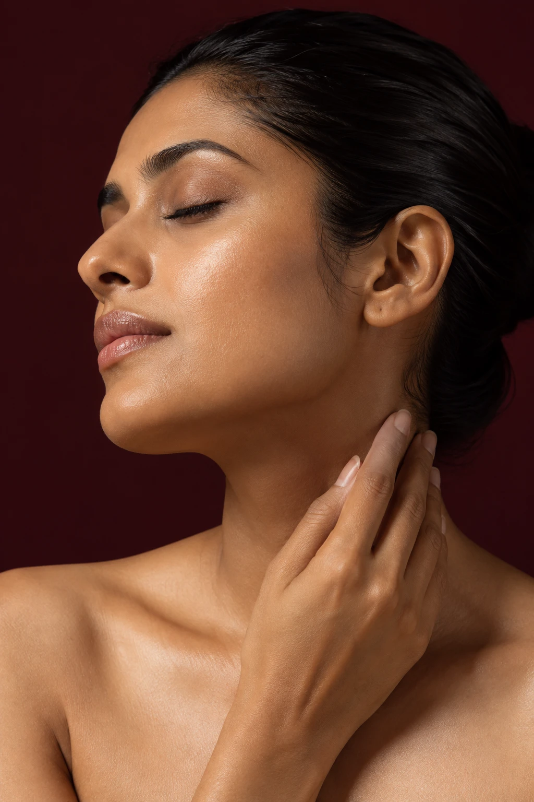

01 / SKIN
Feel good in
your own skin.
Texture. Tone. Your daily skin concerns.
A conversation that starts with you.
For the little things you’d like to change.
And everything that makes you, you.

The most beautiful version
of you is still you.
Your face tells a story. Your goals are personal. Let’s start with what matters to you — whether that’s a skin concern, a refreshed appearance, or simply understanding your options.
At Forever Young, the first step is a conversation.
Choose a starting point.
Ask the clinic which services and
options are available for your goals.
Texture. Tone. Your daily skin concerns.
A conversation that starts with you.
Subtle changes or a new beginning.
Discuss your goals before choosing a treatment.
Unsure where to begin? You don’t need to have all the answers.
MORE THAN A REFLECTION
Your beauty. Your pace. Your decision.
Make space for your questions.
Take the next step when you feel ready.
Message the clinic with your goals and ask about consultation availability.
Discuss the available options, practitioner qualifications, suitability, costs and aftercare.
Understand realistic expectations, potential risks and recovery before making a decision.
04 / A LITTLE CLARITY
Still have something on your mind?
Ask the clinic directly ↗Select “Enquire now” to prepare a short message, then send it to the clinic on Instagram. Your appointment is confirmed only when the team replies.
No. You can start with the concern or goal you have in mind and ask which services are available. Any treatment decision should follow an appropriate consultation.
Contact the clinic to confirm consultation fees and treatment pricing. Ask what is included, how many visits may be needed, and whether there are any additional costs.
Please message @foreveryoung_2k25 for the current address, opening hours and directions. Confirm your appointment before travelling.
No. The photographs are illustrative editorial imagery, not patients or before-and-after results.
A question. A possibility. A first hello.
@foreveryoung_2k25 ↗